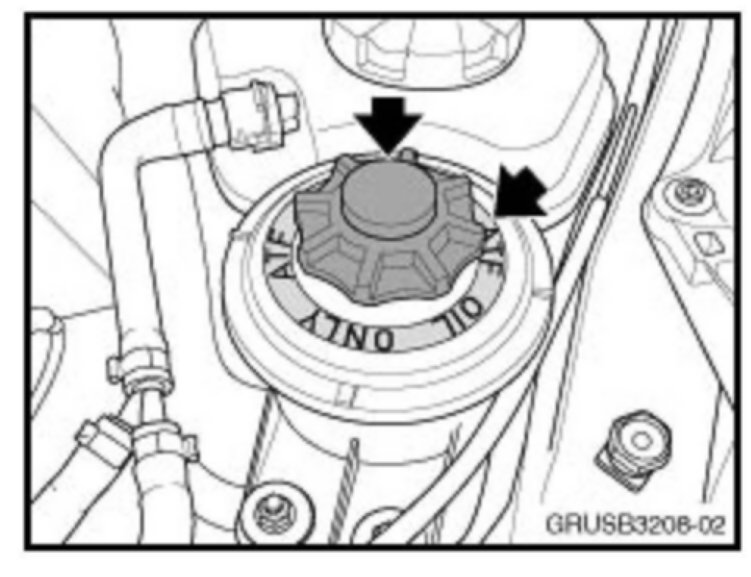
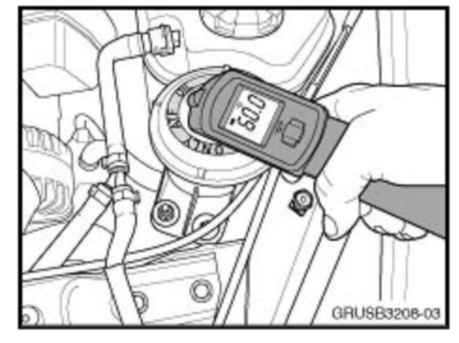
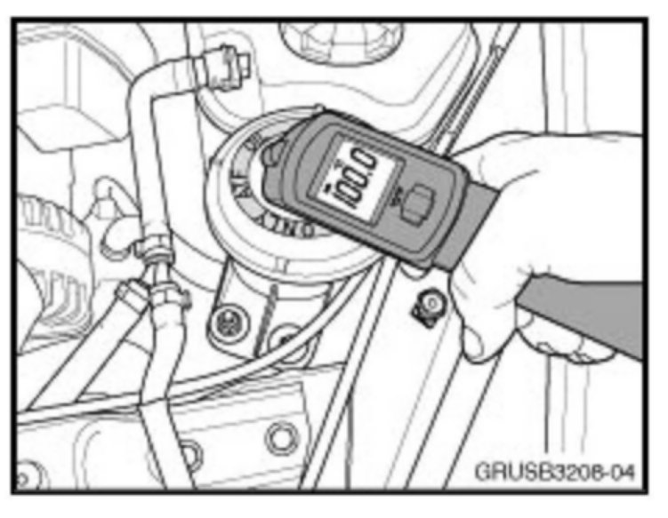
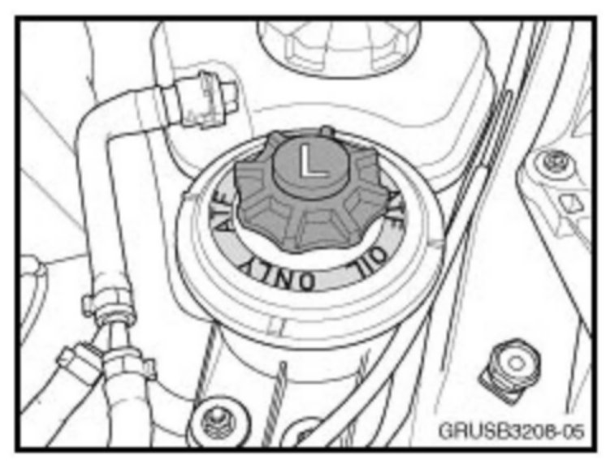
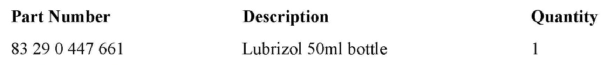
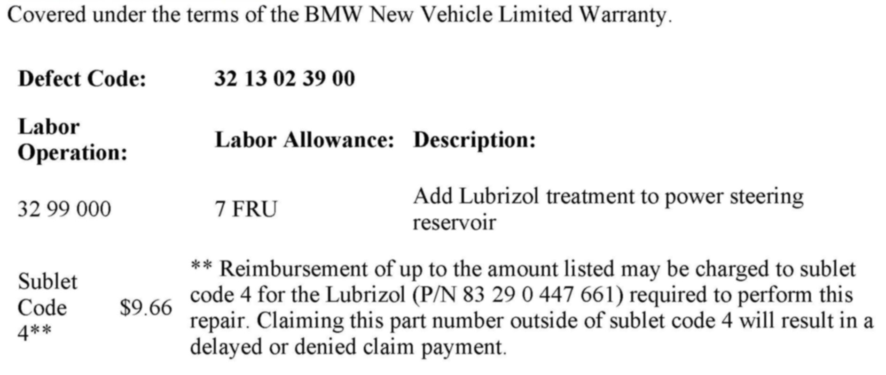

Steering - Squeaking Noise From Steering Gear
SI B 32 07 08Steering and Wheel Alignment
February 2010
Technical Service
This Service Information bulletin supersedes SI B32 07 08 dated March 2009.
[NEW] designates changes to this revision
SUBJECT
Squeaking Noise from the Steering Gear
MODEL
E46 (3 Series) except M3 models
[NEW]E53 (X5)
E60 (5 Series) up to 3/06 except M5 and models with Active Steering (SA 217) and/or Active Roll Stabilization (SA 229)
E61 (5 Series) up to 3/06
E83 (X3) up to 8/06 without Servotronic (SA 214)
SITUATION
The customer may report a squeaking or squealing noise which occurs when turning the steering wheel from left to right. While there are a number of components which can cause this type of noise, this bulletin is specifically related to those noises which occur directly at the pinion shaft of the steering gear.
CAUSE
Insufficient lubrication of the steering gear pinion shaft seal
CORRECTION
Add Lubrizol treatment to the power steering fluid to lubricate the pinion shaft seal.
PROCEDURE
Prior to performing the procedure described in this bulletin, please review Service Information B32 17 08 for noises from the steering column.
Locate the source of the noise, using a stethoscope or other listening device. If the noise is coming from the pinion shaft area of the steering gear, proceed as follows:
1. Check the fluid level and condition of the power steering fluid. Correct the fluid level as necessary.

2. Determine whether the power steering reservoir is filled with Pentosin or ATF. Power steering systems with Pentosin will be marked on the outside of the reservoir or the cap. Additionally, Pentosin will be green in color as opposed to ATF, which is red. If the system is filled with Pentosin, contact Teile Clearing for additional assistance. If the system is filled with ATF, proceed to step 3.
3. Drain 50ml of ATF from the power steering reservoir, using a suction bulb or other suitable tool.

4. With the transmission in Park or Neutral and the parking brake engaged, heat the power steering fluid to 60°C by turning the steering wheel left to right repeatedly, with the engine running. The temperature of the power steering fluid can be measured at the power steering reservoir, using an infrared thermometer.
5. Once the fluid has reached 60°C, switch the engine off and add 50 ml Lubrizol (P/N 83 29 0 447 661) to the power steering fluid reservoir.

6. Start the engine and raise the engine speed to 2500 RPM. Continue to heat the power steering fluid by continually turning the steering wheel from left to right.
7. Once the power steering fluid temperature has reached 100°C, switch the engine off.

8. Using a white paint stick or other suitable marking device, mark the power steering fluid cap or reservoir with an "L" to indicate the addition of the Lubrizol.
9. After a minimum cooling-off time of two hours, check and correct the power steering fluid level as necessary.

PARTS INFORMATION

WARRANTY INFORMATION